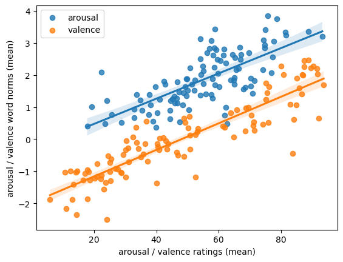
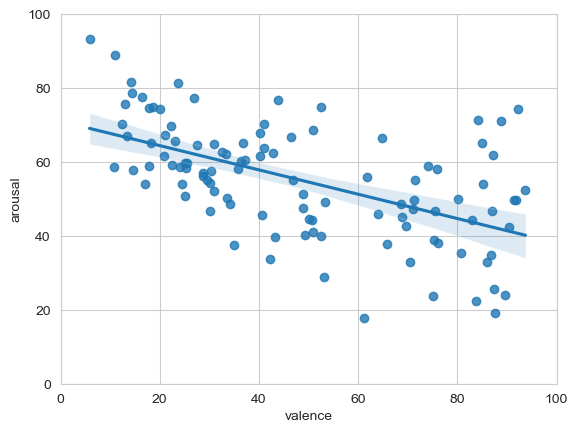
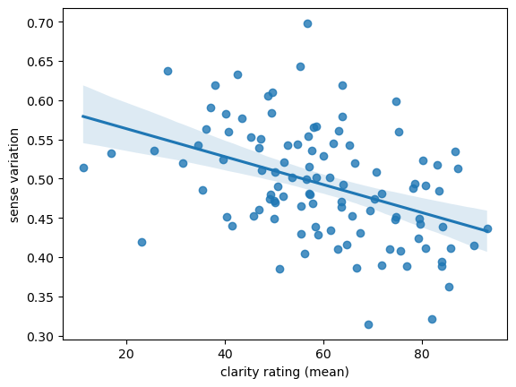
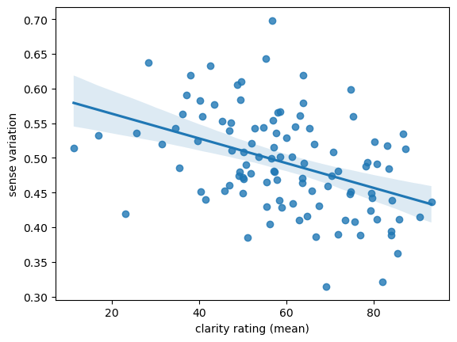
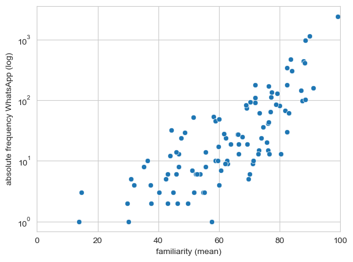
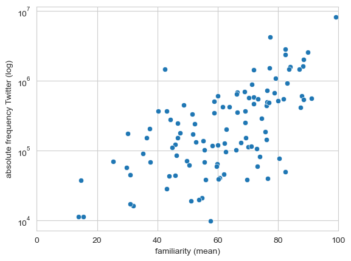
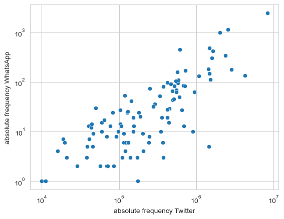
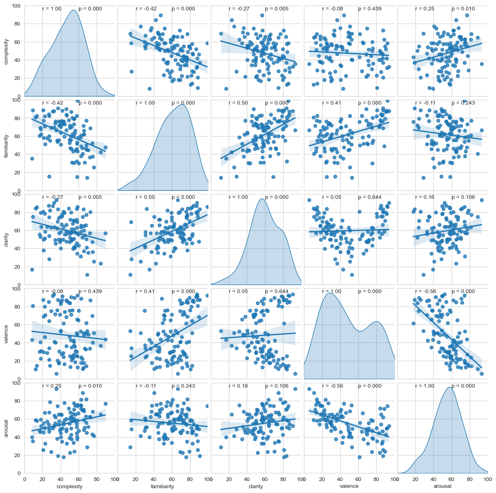

Visualisations
Below you can find some visualizations of our findings. By clicking on 'Ratings', 'Embeddings', or 'Correlations', you can navigate to the different subpages.
For more information, visit our online repository: https://osf.io/vbmpj
Arousal and Valence Ratings: Correlation Arousal and Valence (linear):


Correlation Arousal and Valence (quadratic): Clarity and Sense Variation:
 

Correlation Frequency and Familiarity WhatsApp: Correlation Frequency and Familiarity Twitter:


WhatsApp and Twitter Frequency Correlation: All Correlations:

